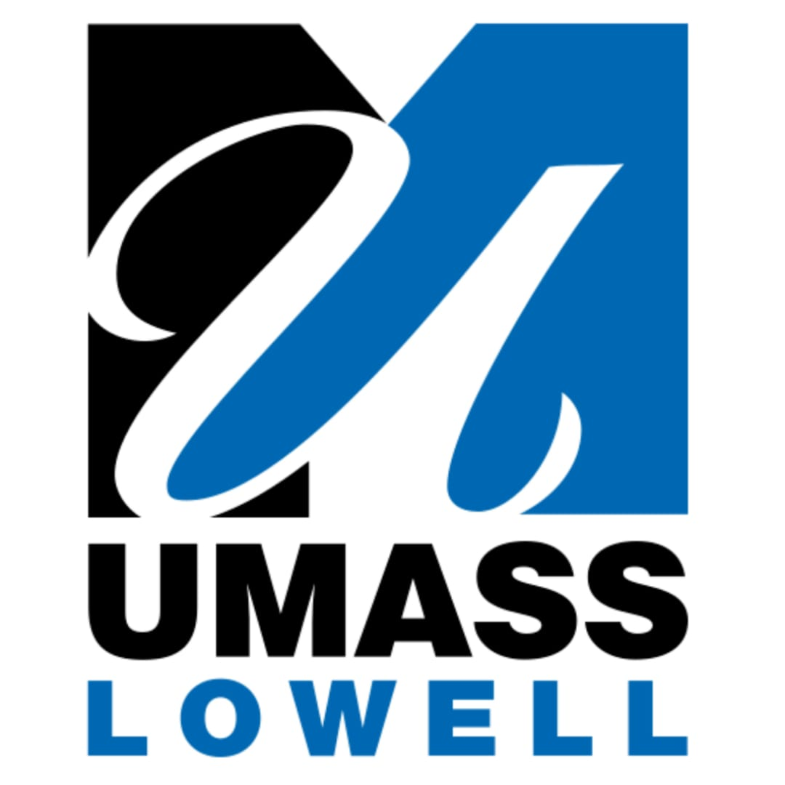
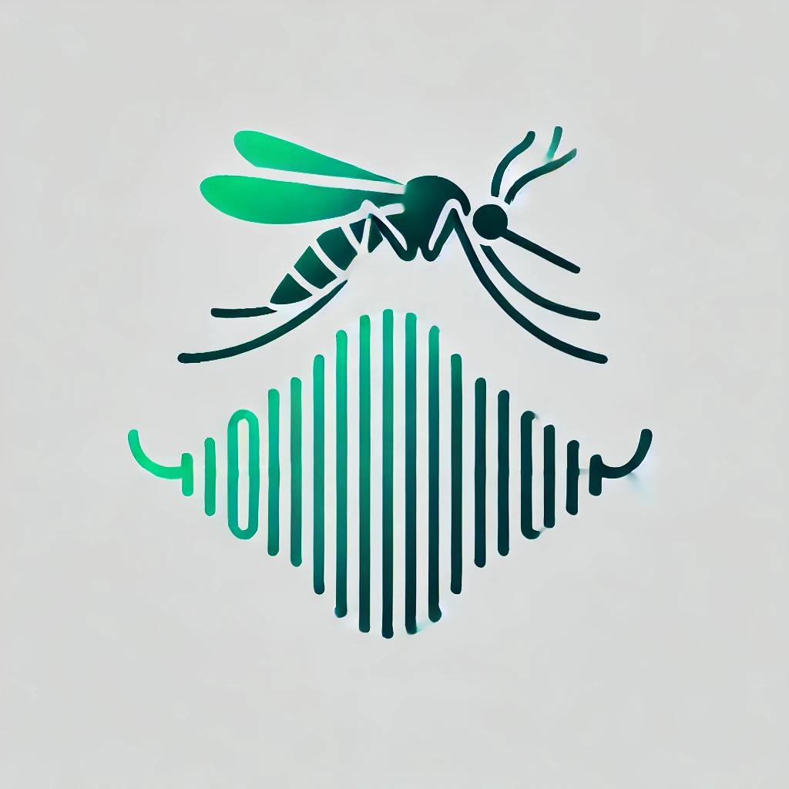
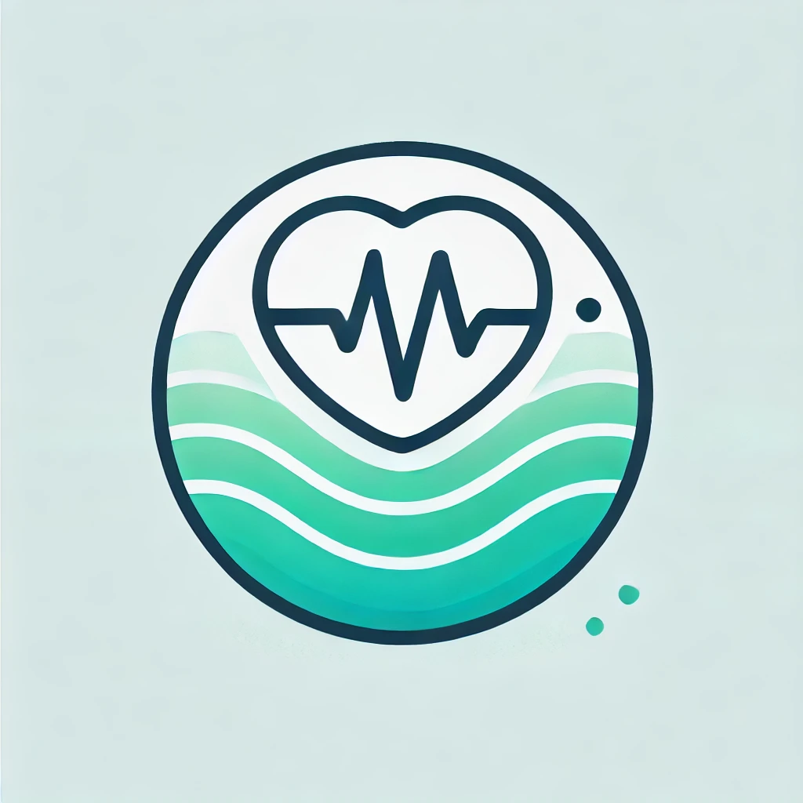

I am Aneesh Vempa
Hey there!, I'm a highly skilled software developer with expertise in machine learning, web development, cloud technologies, and automation. Proficient in data structures and algorithms, modern frameworks, and APIs, with a proven track record in designing scalable solutions and optimizing processes. Experienced in AI-driven innovations and full-stack application development, with a focus on enhancing user experience and driving impactful results. Currently pursuing a Master’s in Computer Science, driving expertise in cutting-edge technologies.
Open to work from May, 12th 2025 -
Discuss Job Opportunities
Open for exciting opportunities in Software Development, AI/ ML Engineer and Data Scientist roles.
Passionate about writing clean code, tackling complex challenges, learning new
technologies, and making a significant impact.
Experience

Data Analyst Intern
University of Massachusetts, Lowell, MA, United States
- Automated workflows using Python to streamline operational processes and generate regular reports, effectively addressing business requirements.
- Designed and optimized SQL queries for efficient data retrieval, enhancing data accessibility and performance.
- Implemented machine learning algorithms to analyze student data, providing actionable insights and improving decision-making processes.
Apr 2024 – Till Date
Research Assistant: Machine Learning
University of Massachusetts, Lowell, MA, United States
- Conducted comprehensive data analysis and cleaning across diverse datasets to ensure high-quality inputs for model training and evaluation.
- Extracted features from audio signals by converting them to spectrograms, enabling effective representation of wingbeat sounds for deep learning models.
- Developed deep learning models, including CNN, LSTM, and GRU architectures, to predict mosquito species based on wingbeat sounds.
- Designed and optimized model architectures, focusing on enhancing prediction accuracy and computational efficiency.
- Achieved the best results for the dataset, significantly improving prediction accuracy; currently working on publishing a paper detailing the methodology and findings.
Feb 2024 – Till Date
Software Development Engineer
Amazon, India
- Enhanced the Alexa Third-Party Registration WebApps, resulting in a significant increase in registered endpoints and customer engagement with Alexa-enabled third-party devices.
- Contributed as a Full Stack Developer, focusing on front-end page development to ensure seamless user experiences.
- Involved in the end-to-end software development lifecycle of the Alexa Third Party TV Registration WebApp, leveraging AWS cloud services and utilizing CI/CD pipelines for efficient deployment and automation.
- Developed CloudWatch dashboards for a backend service, incorporating key metrics such as latency, error rates, request throughput, and resource utilization to enhance monitoring and operational visibility.
- Created integration tests and performed load testing (using AWS Lambda) covering all edge cases for a backend service containing 4 APIs.
Sept 2022 – Dec 2023
Research Engineer: Machine Learning
Mobis Technical Center of India (Hyundai Mobis R & D), India
- Developed Machine Learning models (Random Forest, SVM) and Deep Learning models (CNN, GRU) for the estimation of various vehicle properties that were difficult to estimate using conventional logical algorithms.
- Created a framework for the effective implementation of Machine Learning and Deep Learning models in Electronic Control Units (ECUs).
- Automated the CarSim tool and developed scripts for various other automation activities, significantly improving operational efficiency.
- Developed code scripts in C for the prediction functions of Deep Learning models, ensuring robust integration with existing systems.
- Implemented Deep Learning models in MATLAB for advanced simulation and analysis.
Feb 2021 – Aug 2022
Education
University of Massachusetts, Lowell, Massachusetts, United States
Masters of Science - MS
Computer Science
GPA: 3.88
- Courseworks: Machine Learning, Artificial Intelligance, Advance Database Systems, Data Structures and Algorithms, Internet of Things, Topics in Computer Science, Computer Architecture.
- Accomplishments: I have developed strong skills in full-stack development, AI-powered tools, and cloud platforms, with experience in using advanced technologies like machine learning, generative AI, and automation. I’ve worked on projects like building AI chatbots, creating medical scribe tools, and developing web applications, focusing on solving real-world problems and improving user experiences. My work reflects a passion for using technology to make processes smarter and more efficient.
Jan 2024 - Dec 2025(Expected)
R.V.R & J.C College of Engineering, India
Bachelor of Science in Engineering
Computer Engineering
GPA: 3.4 Equivalent
- Courseworks: C, Object-Oriented Programming in C++, Data Structures, Robotics , Operating systems, Computer Networks, Computer Architecture and organization, Database Management Systems, Analysis of Algorithms, Digital Image Processing, Statistics, Calculus, Differential equations, Transformation Techniques, Complex and numerical analysis, Digital Logic design, HDL programming, Electronic circuit theories.
- Accomplishments: Organized and led well-attended technical workshops on web development, software design, and cybersecurity for students, with positive feedback. Worked with a team to develop engaging and informative content to share passion for technology.
Jun 2016 - Oct 2020
Skills
Programming Languages
- SQL, Python, Java Script, Type Script, C, C++, Java, HTML, CSS
Web Development
- React, Angular, Spring Boot, Express JS, Node.js, RESTful APIs, MongoDB, Flask, PyQt5
Data Processing
- Pandas, NumPy, Scikit-learn, MySQL, Apache Spark, Apache Kafka
Machine Learning and AI
- Machine Learning, Deep Learning(CNN, LSTM, GRU), Natural Language Processing, TensorFlow, PyTorch, LLM, Lang Chain, Vector DB, Generative AI, AI Agents
Cloud Platforms
- AWS (EC2, S3, DynamoDB, Cloudwatch, AWS Lambda, VPC, Cloud Formation, Route 53), Salesforce
Software Practices & Principles
- Algorithms, Object-Oriented Programming, Microservices
Tools & Methodologies
- Git, Jira, Confluence, Scrum, Agile methodologies, Docker, Kubernetes, Continuous Integration and Deployment, Version Control, Android Studio, Xcode, MATLAB, LabVIEW.
Projects
UML ChatBot - Conversational AI with RAG
Developed an advanced chatbot leveraging Retrieval-Augmented Generation (RAG) techniques to provide accurate and efficient responses to user queries. This project integrated the LangChain library to seamlessly combine retrieval and generation, leveraging MongoDB as a vector database for robust data storage. Data retrieval was efficiently performed through vector search, enabling high-performance and accurate information retrieval. OpenAI APIs were employed to enable sophisticated text generation and natural language understanding, enhancing the chatbot's conversational capabilities. The frontend user experience was designed and developed using Flask in Python Additionally, the chatbot was integrated with the Salesforce API, enabling users to create Salesforce cases directly through the interface, simplifying workflows and improving the customer experience.
June 2024
Med Scribe - AI powered Scribe Tool
Designed and developed a desktop application to process doctor-patient audio conversations and generate highly accurate SOAP notes. Built using Python, the application featured a user-friendly interface developed with the PyQt5 library. The tool utilized OpenAI's Whisper API for advanced speech-to-text conversion, ensuring accurate transcription of conversations. OpenAI APIs were leveraged for SOAP note generation, referencing pre-defined templates to maintain consistency and precision. This solution significantly streamlined the documentation process, saving Doctors time spent on documentation.
May 2024
Shikshana - MERN Stack Application
Developed an end-to-end web application, Shikshana, using the MERN stack (MongoDB, Express.js, React, Node.js) to connect students with tutors. Implemented core functionalities, including user authentication with sign-in and sign-up pages, allowing users to register as students or tutors. Students can view, search, filter, and wishlist tutoring posts, as well as edit their profiles. Tutors also have access to view and edit their profiles. Additionally, designed the entire application using Figma, which includes additional planned features such as enabling students to request appointments with tutors and providing tutors with a dashboard to manage appointments. These functionalities will be implemented soon to make the application production-ready.
Mar 2024
Todo App - Angular Web Application
Developed a full-featured Todo web application using Angular, focusing on a dynamic and responsive user experience. Implemented core functionalities such as task management, user interface design, and efficient data handling. The application includes features to add, search, sort, and filter tasks, enabling users to efficiently organize and prioritize their to-do lists.
Feb 2024

Classification of Mosquito Species - Using DenseNet Architecture
Conducted a study on the Classification of Mosquito Species Using Wingbeat Frequencies from Mobile Phone Recordings, leveraging a dataset from Stanford University containing wingbeat recordings of 20 mosquito species collected in diverse environmental conditions. Applied robust pre-processing techniques, including the generation of mel-spectrograms to extract meaningful audio features. Trained a DenseNet121 model, renowned for its densely connected convolutional layers that optimize feature reuse and gradient flow, using the PyTorch library for efficient model implementation and training. Achieved an impressive prediction accuracy of over 98%.
Feb 2024 - May 2024

Stress Tracker App - Transformer Model|Android Studio
Developed and trained a transformer-based model for nurse stress prediction using physiological data from the Empatica E4 biosensor. Built an Android application using Android Studio to interface with the Empatica E4 device, process real-time sensor inputs, and apply trained model weights to provide stress-level predictions. The project combines deep learning and mobile application development to support real-time healthcare monitoring and decision-making.
Nov 2024 - Dec 2024
Simulation of Multi Axis Robotic Arm - python
Developed an algorithm and implemented it in Python to convert G-code into stepper motor control parameters, including the number of steps and motor control settings, effectively reducing code complexity. Simulated the proposed algorithm using Python 3 to validate its functionality and performance, ensuring precise stepper motor control and streamlined execution of G-code instructions.
Dec 2019 - Mar 2020
Awards & Certifications
- Secured 1st place in Tech End held by Computer Science Department, in R.V.R. & J.C. College of Engineering.
- Secured 1st place in Logic Mystery held by Computer Science Department, in R.V.R. & J.C. College of Engineering.
- Secured 3rd place in Project Expo held in R.V.R. & J.C College of Engineering.
- Certified LabVIEW Associative Developer badge from National Instrumentation.
- Salesforce Certified AI Specialist
Download My Resume